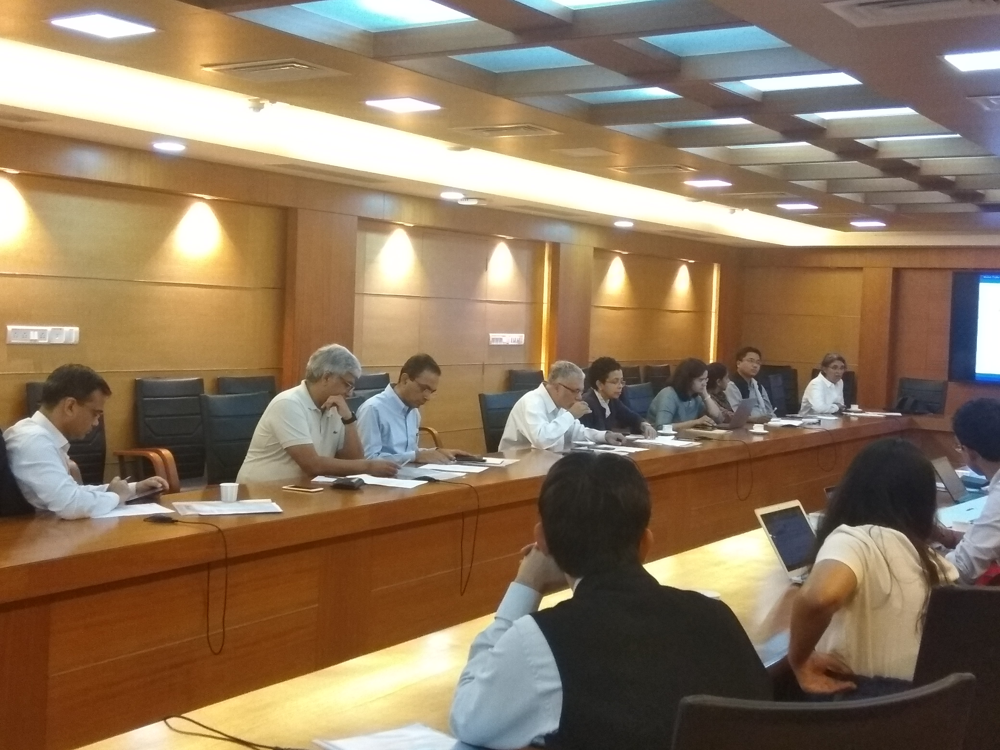
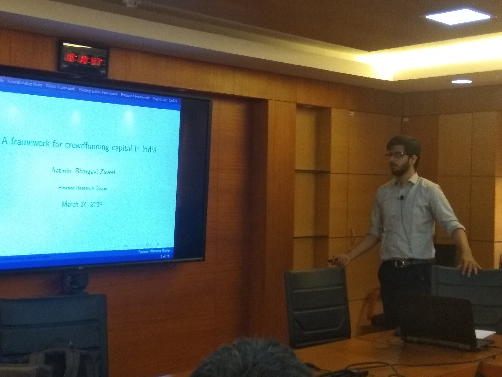
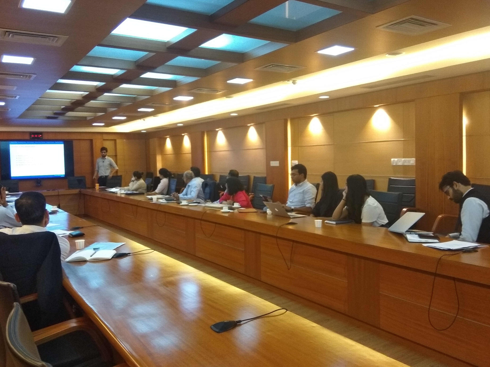
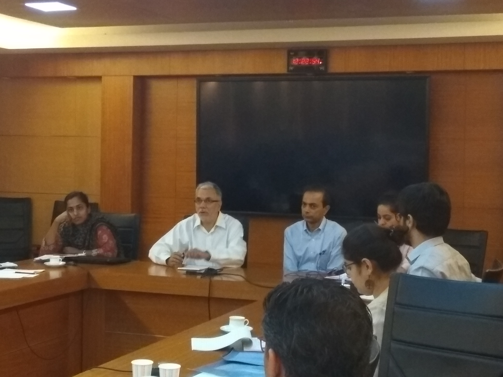

14th March, 2019
The Seanza Conference Hall, IGIDR, Mumbai
The question of enabling access to credit for small and medium sized enterprises, has been at the forefront for a decade now. In the wake of technological advances and the maturity of payment systems, several new business models that seek to facilitate such access have emerged. These models present new opportunities for innovation, fresh avenues of investment and alternative channels of finance to entrepreneurs. At the same time, they also pose different kinds of risks from a regulatory perspective. This roundtable will bring together persons who have pioneered such business models, policy makers, regulators and researchers, to discuss the nuts and bolts of a typical new business model for lending, the existing regulatory bottlenecks that hinder innovation in this space and an appropriate regulatory approach towards this new frontier of finance.
| 09:00 - 09:45 | Registration, Coffee and Tea |
| 09:45 - 10:00 | Welcome address Susan Thomas, IGIDR, FRG |
| 10:00 - 10:30 | A framework for crowdfunding capital in India
[presentation] Aatmin Shah and Bhargavi Zaveri, IGIDR, FRG |
| 10:30 - 11:15 | Innovations in business models for lending Talk by Sanjiv Shah, Tech Entrepreneur Talk by Alok Mittal, Indifi Technologies Talk by Samir Shah, Dvara Trust |
| 11:15 - 11:30 | Tea |
| 11:30 - 12:00 | Working of TReDS [presentation] Sudipto Banerjee, NIPFP |
| 12:00 - 13:00 | Panel discussion: Regulatory approaches towards innovative lending
Rosemary Abraham, Ministry of Finance Rajan Mehta, My Care Health Solutions Bhargavi Zaveri, Finance Research Group, IGIDR Moderator: Ajay Shah, NIPFP |
| 13:00 - 13:15 | Summing up Susan Thomas, IGIDR, FRG |
| 13:15 - 14:00 | Lunch |



